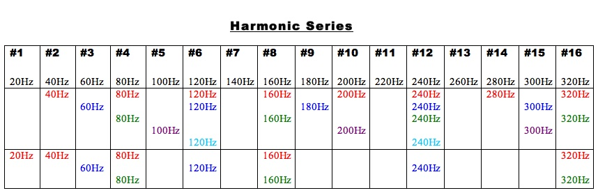

Since the harmonic series consists of frequencies ascending through the integral multiples of the fundamental, there is a clear relationship between the fundamental and its upper partials. If f1 indicates the frequency of the fundamental, then the frequencies of its overtones equal 2f1, 3f1, 4f1, 5f1, etc. If any of these frequencies are substituted by n, therefore 2f1 = n, 3f1 = n, 4f1 = n, or 5f1 = n, etc., it follows that each order of n, 2n, 3n, 4n, 5n, etc. creates a transposition of a given series within the series itself. It means that each harmonic of the harmonic series is a fundamental of a new harmonic series found in the given series through the multiples of n (where n indicates the frequency value of the harmonic or the position of the harmonic in the given series). It also follows that the order of the octaves in the harmonic series is determined by powers of 2 and if n again indicates the frequency value of the harmonic or its position in the series, then its octave repetitions equal 2n, 22n, 23n, 24n, 25n, etc.
